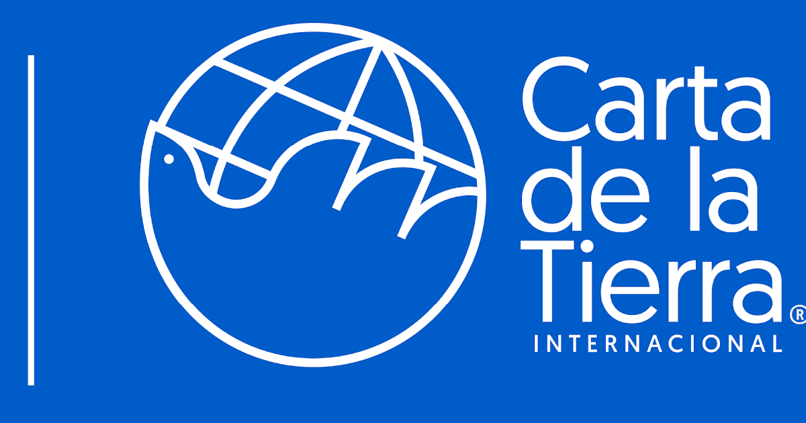
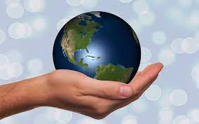

"LA CARTA DE LA TIERRA"
La tierra, nuestro plantea, está pasando por un momento de transición difícil de superar en términos del daño causado por la acción del ser humano a los ecosistemas que sustentan la comunidad de la vida, por tal motivo es necesario despertar en la humanidad una nueva conciencia sobre nuestra propia existencia y la manera como interactuamos con la vida y con los elementos que la sustentan. Es necesario que todos los pueblos del mundo podamos vivir en armonía con la naturaleza procurando el uso racional de los recursos y su sustentabilidad, de tal manera que se puedan superar los conflictos ambientales y además resolver las inequidades de acceso que generan violencia, pobreza y pone en riesgo la democracia.
En este contexto, las Naciones Unidas y la comunidad internacional desde finales del siglo XX se dio a la terea con la participación de todos los pueblos del mundo de la construcción de un tratado tipo declaración, asumido luego por la sociedad civil, titulado “la carta de la tierra” La cual según Leonardo Boof “nació de la nueva conciencia de la humanidad, nació como la aurora del nuevo siglo, como una mirada global y holística de la vida en el planeta”. El documento en su preámbulo plantea:
-La carta de la tierra es una declaración de principio éticos fundamentales para la construcción de una sociedad global justa, sostenible y pacífica en el Siglo XXI. Busca inspirar en todos los pueblos un nuevo sentido de interdependencia global y de responsabilidad compartida para el bienestar de toda la familia humana, de la gran comunidad de vida y de las futuras generaciones. La Carta es una visión de esperanza y una llamada a la acción (Sin autor p. 211)
En palabras de Sandra Fuentes, “La Carta es una visión de esperanza y un llamado a la acción” (Fuentes. S .2017). Es decir esta declaración construida desde un amplio colectivo hace un llamado a los estados, las organizaciones internacionales, las empresas, transnacionales y a la sociedad civil a actuar acorde a los principios que el documento propone.
La carta de la tierra se empieza a gestar desde las primeras conferencias ambientales a nivel global, inicia como una tarea de las Naciones Unidas y se materializa con una amplia participación de la sociedad civil que legitima sus postulados y hacen de este documento una declaración universal de los derechos de la tierra y de la vida que sustenta.
La Carta es el resultado de un diálogo intercultural a nivel mundial en torno a diversos objetivos en común y valores compartidos, que se llevó a cabo durante toda una década. El proyecto de la Carta de la Tierra comenzó como una iniciativa de las Naciones Unidas, pero se desarrolló y finalizó como una iniciativa de la sociedad civil. En el año 2000 se concluyó el documento y la Comisión de la Carta de la Tierra, una entidad internacional independiente, lo dio a conocer públicamente como una carta de los pueblos (Sin autor p. 221)
En su esencia la carta de la tierra tiene como propósito crear conciencia sobre las problemáticas que aquejan a las nuevas y futuras generaciones con relación a las problemáticas ambientales que ponen en riesgo la vida en el planeta, en este sentido la misión de la carta de la tierra lo constituye la necesidad de promover la transición hacia formas sostenibles de vida y hacia una sociedad global que comparta un marco ético común, que incluya el respeto y el cuidado de la comunidad de la vida, la integridad ecológica, derechos humanos universales, el respeto a la biodiversidad, la justicia económica, la democracia y una cultura de la paz.
El objetivo fundamental de la carta de la tierra lo constituye la posibilidad de promover un marco ético de valores y principios para el desarrollo sostenible. Es decir un marco de referencia ético que oriente el futuro hacia formas de interacción con el plantea más sustentables que minimicen el impacto ambiental y procuren a la humanidad condiciones de equidad y bienestar.
Este objetivo se fundamenta en cuatro principios necesarios que deben orientar los comportamientos de personas, organizaciones, empresas, gobiernos e instituciones transnacionales, son: “el respeto y cuidado de la comunidad de vida, la integridad ecológica, la justicia social y económica, y, por último, pero no menos importante, la democracia, no violencia y paz” (Fuentes, 2017)
La materialización de la carta de la tierra y sus objetivos lo constituye el desarrollo de las siguientes metas:
1. Incrementar el grado de conciencia en todo el mundo sobre la Carta de la Tierra y promover la comprensión de su visión ética inclusiva.
2. Buscar el reconocimiento y el respaldo de la Carta de la Tierra por parte de las personas, las organizaciones y las Naciones Unidas.
3. Promover el uso de la Carta de la Tierra como una guía ética y la implementación de sus principios por parte de la sociedad civil, los negocios y los gobiernos.
4. Exhortar y prestar apoyo al uso educativo de la Carta de la Tierra en escuelas, universidades, comunidades ecuménicas, comunidades locales y muchos otros entornos.
5. Promover el reconocimiento y el uso de la Carta de la Tierra como un documento de ley blanda.
Estas metas como materialización de los objetivos constituyen el eje de acción de la carta de la tierra y su impacto positivo, en cuanto a incrementar el grado de conciencia, buscar un reconocimiento que legitime su accionar, servir de guía ética con la implementación de sus principios, dirigir sus accionar en el campo educativo y constituirse como un marco jurídico internacional como referente para el desarrollo de políticas ambientales sustentables incluyentes.